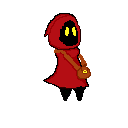
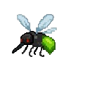
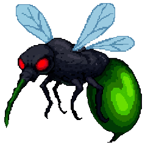

Motrilem
Metroidvania 2D sous Unity
Metroidvania 2D : 3 magies, un marécage à explorer, un mini-boss et un boss en plusieurs phases. Démo jouable.

- 0scripts C#
- 0scènes jouables
- 0magies
- 0boss
Contexte
Motrilem est un projet personnel que je développe seul. C'est un jeu 2D de type metroidvania réalisé sous Unity, inspiré de jeux comme Hollow Knight. Le joueur incarne un personnage mort 5000 ans avant les événements du jeu, revenu à la vie sans aucun souvenir de son passé.
La démo actuelle se joue du menu principal jusqu'à la fin du premier donjon : un tutoriel, un marécage à explorer, un mini-boss, un boss complet et un système de sauvegarde.
Univers et histoire

Un an après son réveil, le protagoniste découvre un livre ancien qui raconte la légende de deux frères mages : l'un héros, l'autre devenu un puissant antagoniste. Leur affrontement s'est terminé par la mort des deux.
En lisant ce livre, le héros retrouve brièvement la mémoire, avant que celle-ci ne soit absorbée par l'ouvrage. Il ne lui reste qu'un souvenir : la maîtrise d'un type de magie. Pour retrouver son identité, il doit récupérer les pages du livre dispersées dans le monde, chacune gardée par un boss.
Parcours de la démo
- Menu principal : Jouer, Paramètres (volumes musique / effets / dialogues), Quitter.
- Tutoriel dans la grotte : intro en fondu, panneaux, livre de la légende, puis choix définitif de l'affinité magique.
- Le marécage acide : un monde découpé en plusieurs cartes reliées (Berges contaminées, Racines noyées, Ruines englouties, Hauteurs infestées, Cœur du marécage).
- Le Terrier gluant : l'antre du mini-boss, le Gros Gluant.
- Le donjon de Séraphel : le Seuil, la Galerie des Remerciements, l'antichambre, puis l'arène du boss.
- Une page du livre : récompense du boss, qui débloque l'attaque chargée. Une porte « À suivre… » termine la démo.
Système de magie
Au début du jeu, le joueur choisit une affinité sur un écran de cartes animé. Le choix est définitif et change toute la façon de combattre :
Feu
Boule de feu qui explose en petite zone et fait brûler l'ennemi (dégâts sur la durée).
Foudre
Éclair très rapide qui rebondit sur deux ennemis proches.
Glace
Éclat qui ralentit ; trois coups rapprochés gèlent complètement l'ennemi.
- Visée dans 8 directions (haut, bas et diagonales).
- Attaque chargée débloquée après le premier boss : maintenir puis relâcher.
- Effets visuels propres à chaque magie : aura autour du joueur, braises, brume froide, étincelles.
Déplacements
J'ai beaucoup travaillé le « ressenti » des contrôles, qui fait la différence dans un jeu de plateforme :
- Marche et course avec un élan qui se construit progressivement et se conserve en l'air.
- Saut variable (relâcher la touche raccourcit le saut), coyote time et jump buffer.
- Plateformes traversables par le bas, plateformes mobiles, nénuphars et ascenseurs.
- Regarder en haut ou en bas pour voir la suite du niveau.
- Nage dans l'acide une fois l'immunité obtenue, avec un bond pour en sortir.
Ennemis et boss

Le protagoniste
Revenu d'entre les morts, il ne garde qu'un souvenir : sa magie.

Moustique piqueur
Il s'arrête, tremble en rougissant, puis lance une copie fantôme de sa trompe sur le joueur.

Slimes
Ennemis de base du marécage, qu'on peut aussi vaincre en les écrasant.
Le Gros Gluant
Mini-boss en arène fermée : bonds, ondes de choc au sol, crachats de glu et appels de petits slimes. Il garde un éclat de vie.

⚠ BOSS
Séraphel — « Ce qui bourdonne dans la lumière »
Un moustique géant, presque une divinité, gonflé d'acide. C'est le combat le plus abouti du jeu :
- Une dizaine d'attaques : trompes, plongeon, charge annoncée, pluie d'acide, geysers, nova, spirale, vague d'acide, essaim…
- Plusieurs phases : à mi-vie, il plonge dans un bassin pour se soigner, puis revient enragé et invoque des moustiques qu'il dévore s'ils survivent.
- L'arène se dégrade : le sol s'effondre dans l'acide au fil du combat.
- Réaction à chaque magie : le feu le brûle, la glace le ralentit, la foudre l'étourdit.
Systèmes du jeu
Sauvegarde
Fichier JSON écrit en priant devant une statue d'ange : vie, magie, améliorations, objets ramassés et point de réapparition.
Monde en cartes
Le marécage est découpé en plusieurs scènes. Les transitions conservent la position et l'élan du joueur, et le nom de chaque zone s'affiche à l'entrée.
Exploration
Éclats de vie cachés (+20 PV max), urnes cassables, murs fissurés, leviers, salles de vagues d'ennemis.
Audio
Musique par zone avec fondu enchaîné, musique de combat, bruitages, réglage séparé des volumes.
Interface
Barre de vie, barre du boss, menu pause, écran de mort, dialogues, navigation clavier et souris.
Rendu
Décors en parallaxe, particules, lumières qui vacillent, animations du joueur et des ennemis.
En préparation : un boss final qui apprend du joueur
Pendant toute la partie, le jeu mesure la façon de jouer : précision des sorts, distance gardée avec les ennemis, taux d'esquive, agressivité, préférence entre la magie et l'écrasement. Ce profil est enregistré dans la sauvegarde. Il servira de base à l'IA du boss final, qui devra imiter ou contrer le style du joueur.
Méthode de travail
- Outils d'éditeur Unity : des scripts génèrent automatiquement les scènes (tutoriel, marécage, donjon), ce qui me permet de modifier un niveau sans tout refaire à la main.
- Conception du niveau en Python : un petit outil décrit le marécage et génère le code C# du découpage en zones.
- Itérations : 13 étapes de développement sauvegardées (tutoriel, v2, v3, étang, monde ouvert, panneaux, marécage, boss…), avec Git en parallèle.
- Code commenté en français et organisé par dossier : joueur, magie, ennemis, sauvegarde, audio, menus, visuels.
Analyse réflexive
Au début, Motrilem se limitait à un personnage qui se déplace. Le faire grandir jusqu'à une vraie démo m'a appris à penser en systèmes : chaque élément (sauvegarde, magie, zones, musique) doit fonctionner avec tous les autres. La sauvegarde et le passage entre les cartes ont été les parties les plus difficiles, car il faut retrouver exactement l'état du jeu d'une scène à l'autre.
Le combat contre Séraphel m'a montré l'importance de la lisibilité : chaque attaque doit être annoncée pour que le joueur puisse réagir. J'ai aussi compris l'intérêt d'outils maison : générer les scènes par code m'a fait gagner beaucoup de temps à chaque correction.
Prochaines étapes
- La suite de l'aventure après le donjon de Séraphel.
- De nouvelles pages du livre et de nouveaux boss.
- Le boss final avec une IA adaptée au profil du joueur.
Compétences du BUT démontrées
-
C1 — Réaliser un développement d'application
C#, Unity, architecture du gameplay, interfaces de jeu.
-
C2 — Optimiser des applications
Physique et collisions, IA des ennemis et du boss, structures de sauvegarde.
-
C4 — Gérer des données
Sérialisation JSON, collecte et analyse des données de comportement du joueur.
-
C5 — Conduire un projet
Découpage en étapes, outils de production, gestion d'un projet sur la durée.
Apprentissages Critiques (AC) démontrés
- AC11.01 Implémenter des conceptions simples — Déplacements, ennemis, magies.
- AC11.02 Élaborer des conceptions simples — Architecture par systèmes : magie, sauvegarde, audio.
- AC11.03 Tester et évaluer les résultats — Réglage du ressenti, équilibrage des combats.
- AC11.04 Développer des interfaces utilisateurs — HUD, menus, écran de choix de la magie.
- AC12.01 Analyser un problème — Comportements du boss, transitions entre cartes.
- AC22.01 Choisir des structures de données — Données de sauvegarde, profil du joueur.
- AC31.02 Faire évoluer une application — Projet développé et enrichi sur plusieurs mois.
- AC15.02 Utiliser des outils de gestion — 13 étapes de développement sauvegardées et suivies.